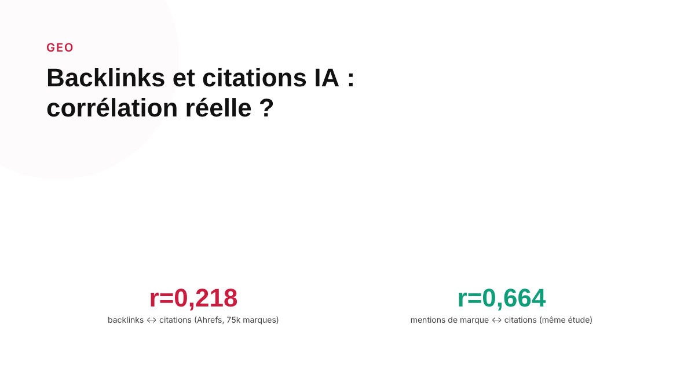
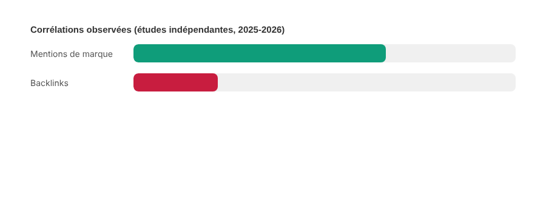

Backlinks et citations IA : les deux logiques se recoupent-elles vraiment ?
Une étude mesure une corrélation faible entre backlinks et citations IA. Une autre, sur un échantillon tout aussi large, place les backlinks en tête des facteurs. Les deux ne peuvent pas avoir également raison en tous points — voici ce qu'on peut en retenir sans trancher artificiellement.

Le netlinking est l'un des piliers les plus anciens du SEO. Sa valeur pour les citations des IA génératives est en revanche loin d'être tranchée : plusieurs études publiées entre fin 2025 et mi-2026, menées sur des échantillons comparables en taille, arrivent à des conclusions difficiles à réconcilier. Plutôt que de choisir l'étude qui confirme une intuition préexistante, le plus honnête est d'exposer le désaccord et d'en tirer ce qui reste solide malgré tout.
Le camp de la corrélation faible
Une étude Ahrefs portant sur 75 000 marques, menée fin 2025, a mesuré un coefficient de corrélation de seulement 0,218 entre le nombre de backlinks d'un domaine et sa présence dans les citations de Google AI Overviews — une corrélation faible selon les standards statistiques habituels. Une étude de Machine Relations Research publiée en juillet 2026, portant également sur 75 000 marques, a mesuré exactement le même coefficient de 0,218, ce qui renforce la crédibilité du chiffre malgré la source différente. Une méta-analyse de Zyppy datée de mai 2026, qui synthétise 54 expériences, brevets et études de cas sur ChatGPT, Gemini et Perplexity, va plus loin : elle place les backlinks parmi les facteurs les moins déterminants, les traitant comme un seuil minimal d'existence plutôt qu'un levier de classement actif.
Le camp de la corrélation forte
À l'inverse, une étude SE Ranking portant sur 129 000 domaines a trouvé que les backlinks arrivaient en tête des facteurs corrélés aux citations de ChatGPT, devant tous les autres signaux mesurés. Cette même étude a observé que les sites disposant de plus de 350 000 domaines référents obtenaient en moyenne 8,4 citations, contre seulement 1,6 à 1,8 pour les sites en dessous de 2 500 domaines référents — un écart net. Les auteurs de l'étude précisent eux-mêmes qu'il s'agit d'une corrélation observée, pas d'une formule de calcul confirmée. Une analyse de Link.Build portant sur des requêtes du premier au troisième trimestre 2025 rapporte également une association positive marquée entre backlinks de qualité, thématiquement pertinents, et probabilité d'être cité par une IA générative.

Pourquoi les résultats divergent autant
Les méthodologies ne mesurent pas rigoureusement la même chose : certaines étudient Google AI Overviews, d'autres ChatGPT, Gemini ou Perplexity — des systèmes dont on a vu par ailleurs qu'ils ne partagent pas le même mécanisme de sélection de sources. D'autres encore combinent plusieurs plateformes sans toujours distinguer leur poids respectif. Les périodes de mesure diffèrent aussi, sur un sujet où les algorithmes évoluent en continu. Ce n'est donc pas qu'une étude a raison et l'autre tort : elles mesurent des phénomènes voisins mais pas identiques, avec des méthodes différentes.
Un signal qui dépasse les backlinks eux-mêmes
Un point convergent mérite d'être retenu malgré les désaccords : dans l'étude Ahrefs, les mentions de marque non liées (citées sans lien hypertexte) affichaient une corrélation nettement plus forte (0,664) que les backlinks seuls (0,218). Une étude Muck Rack de mai 2026, portant sur plus de 25 millions de liens analysés à travers ChatGPT, Claude et Gemini, est allée dans le même sens en constatant que l'essentiel des citations provenait de la couverture médiatique obtenue (earned media), pas du nombre brut de liens entrants. Plusieurs méthodologies différentes pointent donc, indépendamment du désaccord sur les backlinks eux-mêmes, vers l'idée que la réputation et la reconnaissance d'une marque comptent au moins autant que son profil de liens.
Ce qu'on peut raisonnablement en conclure
Aucune étude ne trouve de corrélation négative entre backlinks et citations IA : le désaccord porte sur l'intensité de l'effet, jamais sur sa direction. Le netlinking garde donc une valeur légitime, y compris dans une optique GEO, mais il serait imprudent d'en faire le levier prioritaire sur la seule base d'une étude qui le classe en tête, quand une autre de taille comparable le place parmi les facteurs les plus faibles. Les signaux les plus constants à travers les études — mentions de marque, couverture éditoriale obtenue — semblent un pari plus sûr qu'un netlinking massif et peu sélectif.
FAQ
Les backlinks aident-ils vraiment à être cité par ChatGPT ?
Les études disponibles ne s'accordent pas sur l'ampleur de l'effet. Une étude Ahrefs sur 75 000 marques mesure une corrélation faible (0,218). Une étude SE Ranking sur 129 000 domaines place au contraire les backlinks en tête des facteurs corrélés aux citations ChatGPT. La direction est positive dans les deux cas, mais l'intensité de l'effet reste disputée.
Qu'est-ce qui corrèle le plus fortement avec les citations IA, selon les études disponibles ?
Les mentions de marque non liées (citées sans lien hypertexte) apparaissent comme un facteur plus fortement corrélé que les backlinks dans plusieurs études, dont celle d'Ahrefs qui mesure un coefficient de 0,664 pour les mentions de marque contre 0,218 pour les backlinks.
Faut-il arrêter une stratégie de netlinking à cause de ces résultats ?
Non. Même les études les plus prudentes sur l'effet des backlinks ne trouvent jamais de corrélation négative, seulement un effet plus modeste que prévu face à d'autres leviers. Le netlinking garde une valeur établie pour le SEO classique, et reste positif, bien que non déterminant à lui seul, pour les citations IA.
Envie d'une stratégie de notoriété qui compte vraiment pour le GEO ?
Pour aller plus loin, voir la page GEO, et l'article Ce qui compte encore en netlinking, pour Google comme pour les IA.
Pour continuer sur ce sujet.